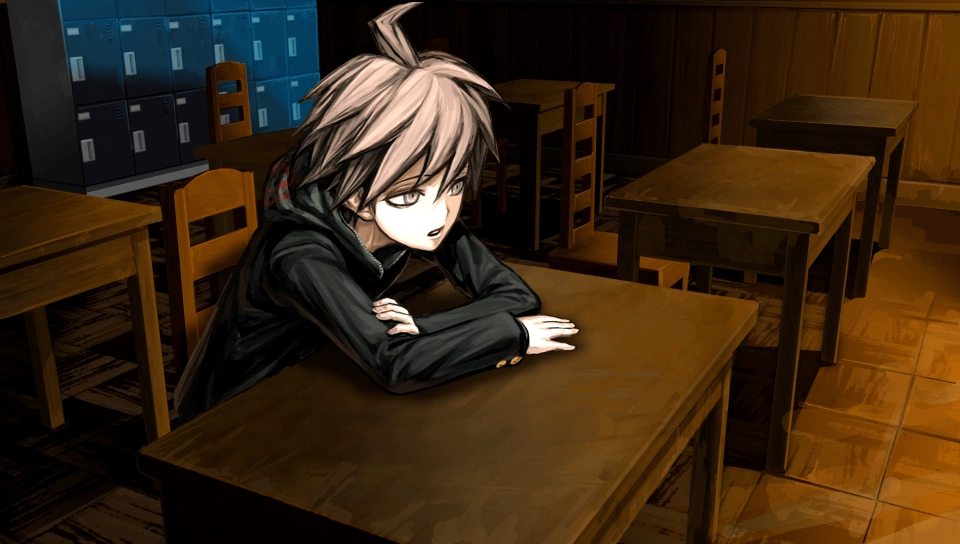

Makoto Naegi
Aviso de spoilers: esta ficha incluye el destino del personaje en Danganronpa: Trigger Happy Havoc.
Datos
- Nombre japonés
- 苗木 誠
- Talento
- Estudiante Afortunado Definitivo
- Rol
- Protagonista
- Cumpleaños
- Grupo Sanguíneo
- A
- Altura
- 160 cm
Gustos
Le gusta
- Curry
- Cosas de moda
No le gusta
- Caballa seca
- Tofu seco
Descripción
Un estudiante optimista que confía en la esperanza y en sus compañeros.
Destino
Mostrar el destino del personaje (spoiler)
- Estado
- Sobrevive
- Capítulo
- No aplica
- Papel final
- Superviviente

Más información en la página de Makoto Naegi en Danganronpa Fandom (se abre en una pestaña nueva). Volver al catálogo.